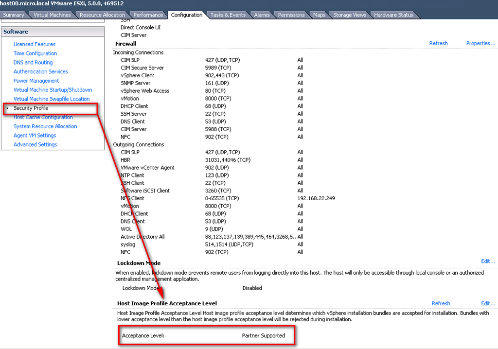

Пакеты VIB
Для ESXi 5 есть возможность доустанавливать всякие разные компоненты. Это новые драйверы, новые версии драйверов, какие-то другие вещи типа агента HA – в общем, всякий софт.
Притом, их можно не только устанавливать, но и интегрировать в дистрибутив – чтобы сделать доступными сразу после установки самого ESXi. Подробности см. тут – Image builder (http://www.vm4.ru/2011/10/image-builder.html).
Для установки или интеграции ПО оно должно поставляться в т.н. vib-пакетах. Файл vib содержит в себе непосредственно ПО и метаданные к нему. В метаданных, в частности, содержится цифровая подпись.
Более подробно о том, что там в vib – What's in a VIB? (http://blogs.vmware.com/esxi/2011/09/whats-in-a-vib.html).
Как создать свой собственный vib – How to create your own .vib files (http://www.yellow-bricks.com/2011/11/29/how-to-create-your-own-vib-files/), небольшое дополнение – Some more nuggets about handling VIB files (http://www.yellow-bricks.com/2011/11/30/some-more-nuggets-about-handling-vib-files/). Обратите внимание что в данном примере создаваемый vib-пакет содержит в себе не софт, а изменение настроек брендмауэра ESXi.
Цифровая подпись дает один из нескольких статусов vib-пакету. Возможные варианты:
Создаваемый вручную пакет, очевидно, может иметь лишь последний статус списка, означающий “неподдерживаемый”.
Поиметь прикладную пользу от этих знаний можно в настройках сервера, указав – пакеты с каким статусом дозволены на этом сервере ESXi (см.рис).

Автор: Михаил на четверг, Декабрь 01, 2011